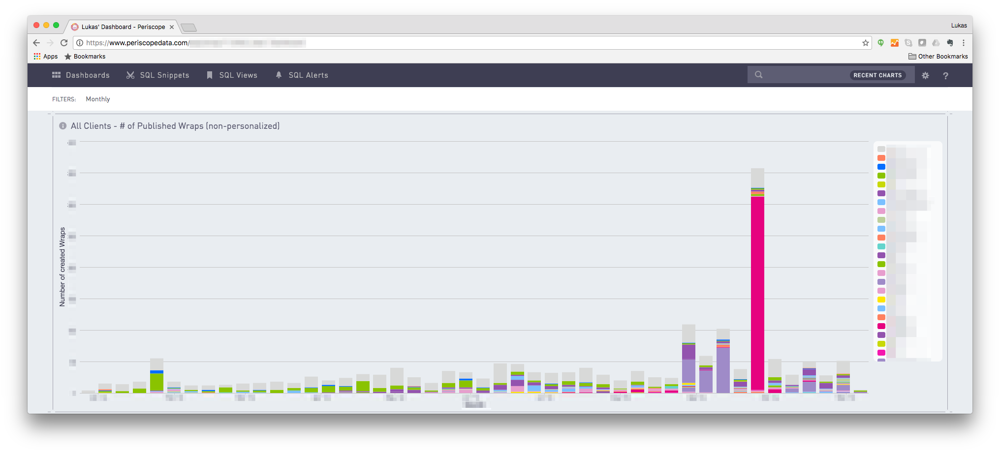
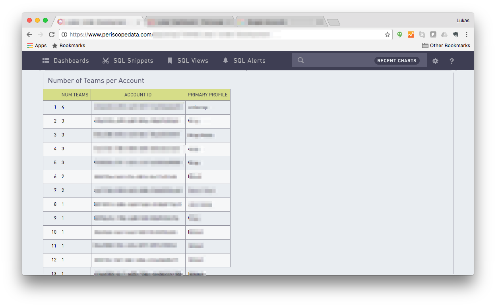
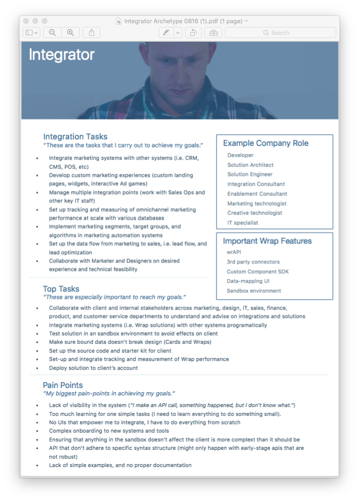
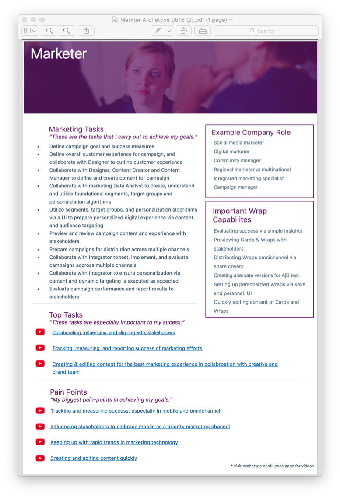

Projects


I'm a user researcher, team-player, and curious learner of all things new. For the past 4 years I uncovered insights and told stories to make better software. The fundamental motivation for pursuing my chosen career is integral to one of the great challenges of our time: shaping the relationship between humans and technology.
I strive to be part of teams that make a difference. I am originally from Hamburg, the second largest city and major economic hub of Germany, and moved to the U.S. when I was thirteen. In my spare time I enjoy learning new things, surfing, playing soccer, and eating and making food.
As the User Researcher with the mobile tech startup Wrap Media in San Francisco I often times needed to use data to answer product questions. A lot of that data was stored in a PostgreSQL database, and I wrote quite a few SQL queries to get what I needed for my analyses and visualizations.
To give you a sense of my competency with SQL, here are a few sample queries I wrote. A lot of them are also from Duke University's "Managing Big Data with MySQL" course on Coursera, which I recently completed.
How many Wraps have been published in the last x weeks?

SELECT user_info,
COUNT(DISTINCT wraps),
date_trunc('week', created_at),
CASE
WHEN user.email IN ('design_team_email') THEN 'Wrap Design'
WHEN (user.email LIKE 'abc' AND u.email != 'xyz') OR u.email LIKE 'def' THEN 'Internal Wrap'
WHEN u.email LIKE '%customer_domain' THEN 'customer'
WHEN u.email LIKE '%customer_domain' THEN 'customer'
ELSE Other
END AS customer
FROM(SELECT w.user_id AS user_id,
w.id AS wrap_id,
children_wraps.created_at AS "date_created"
FROM wrapi.wraps w
INNER JOIN wrapi.wraps children_wraps
ON w.id = children_wraps.parent_wrap_id
WHERE children_wraps.created_at >= '2016-01-01')
AS user_wraps
RIGHT JOIN wrapi.users u
ON user_wraps.user_id = u.id
WHERE NOT EXISTS (SELECT *
FROM wrapi.users
WHERE (u.email LIKE'abc'
OR u.email IN (x,y,z)
GROUP BY u.id, u.email, date_trunc('week', user_wraps.date_created)
HAVING COUNT(DISTINCT user_wraps.wrap_id) > 0
ORDER BY date_trunc('week', user_wraps.date_created) ASC
How many teams do our customers have per account?

SELECT count(t.id) as num_teams,
t.acct_id,
p.nme AS primary_profile
FROM wpi.team t
INNER JOIN wpi.accts a
ON t.acct_id = a.id
INNER JOIN wrapi.profs p
ON a.prim_prof_id = p.id
GROUP BY t.acct_id, p.nme
ORDER BY num_teams DESC
Which sku had the greatest total sales during the combined summer months of June, July, and August?
SELECT sku,
SUM(CASE WHEN EXTRACT(MONTH from saledate)=6 THEN amt END) AS june_sales,
SUM(CASE WHEN EXTRACT(MONTH from saledate)=7 THEN amt END) AS july_sales,
SUM(CASE WHEN EXTRACT(MONTH from saledate)=8 THEN amt END) AS august_sales,
june_sales + july_sales + august_sales AS tot_sales
FROM trnsact
WHERE stype='P'
GROUP BY sku
ORDER BY tot_sales DESC
How many distinct dates are there in the saledate column of the transaction table for each month/year/store combination in the database?
SELECT COUNT(DISTINCT saledate),
extract(year from saledate),
extract(month from saledate),
store
FROM trnsact
GROUP BY extract(year from saledate),
extract(month from saledate),
store
ORDER BY COUNT(DISTINCT saledate) ASC
What is the average daily revenue for each store/month/year combination in the database?
SELECT COUNT(DISTINCT saledate) AS sale_days,
SUM(amt)/COUNT(DISTINCT saledate),
EXTRACT(YEAR from saledate)||EXTRACT(MONTH from saledate) AS month_year,
store
FROM trnsact
WHERE stype = 'P'
GROUP BY extract(year from saledate) || extract(month from saledate),
store
ORDER BY month_year,
store
What is the average daily revenue brought in by Dillard’s stores in areas of high, medium, or low levels of high school education?
SELECT ed.low_ed_rate, (SUM(gd.rev)/SUM(gd.sale_days)) AS avg_rev
FROM(
SELECT
COUNT(DISTINCT t.saledate) AS sale_days,
SUM(t.amt) AS rev,
EXTRACT(YEAR from t.saledate) AS yr,
EXTRACT(MONTH from t.saledate) AS mo,
t.store,
CASE WHEN(yr = 2005 AND mo = 8) THEN 'no' ELSE 'yes' END AS include
FROM trnsact t
WHERE stype = 'P' AND include = 'yes'
HAVING sale_days >= 20
GROUP BY yr, mo, store
) AS gd
INNER JOIN (
SELECT store,
msa_high,
CASE
WHEN (msa_high >= 50 AND msa_high <= 60) THEN 'low'
WHEN (msa_high > 60 AND msa_high <= 70) THEN 'med'
WHEN (msa_high > 70) THEN 'high'
END AS low_ed_rate
FROM store_msa
)AS ed
ON gd.store = ed.store
GROUP BY ed.low_ed_rate;
Compare the average daily revenues of the stores with the highest median msa_income and the lowest median msa_income. In what city and state were these stores, and which store had a higher average daily revenue?
SELECT cleaned_data.store,
cleaned_data.Avg_Revenue,
cleaned_data.city,
cleaned_data.state,
cleaned_data.msa_income
FROM (
SELECT t.store,
SUM(t.amt) / COUNT(DISTINCT t.saledate) AS Avg_Revenue,
m.city,
m.state,
m.msa_income
FROM ua_dillards.trnsact t
JOIN ua_dillards.store_msa m ON m.store=t.store
WHERE (EXTRACT(YEAR FROM t.saledate) || EXTRACT(MONTH FROM t.saledate)) <> '2015-8'
AND t.stype = 'P'
GROUP BY t.store,
m.city,
m.state,
m.msa_income
HAVING COUNT(DISTINCT t.saledate) > 20
) AS cleaned_data
--JOIN ua_dillards.store_msa msa ON msa.store = cleaned_data.store
WHERE cleaned_data.msa_income IN (
(SELECT MIN(msa_income)
FROM ua_dillards.store_msa),
(SELECT MAX(msa_income)
FROM ua_dillards.store_msa)
);
What was the average daily revenue Dillard’s brought in during each month of the year?
SELECT cleaned_data.Avg_Revenue,
cleaned_data.mo
FROM (
SELECT SUM(t.amt) / COUNT(DISTINCT t.saledate) AS Avg_Revenue,
EXTRACT(MONTH FROM t.saledate) AS mo
FROM ua_dillards.trnsact t
WHERE (EXTRACT(YEAR FROM t.saledate) || EXTRACT(MONTH FROM t.saledate)) <> '2015-8'
AND t.stype = 'P'
GROUP BY EXTRACT(MONTH FROM t.saledate)
HAVING COUNT(DISTINCT t.saledate) > 20
) AS cleaned_data
ORDER BY Avg_revenue DESC;
Which department, in which city and state of what store, had the greatest % increase in average daily sales revenue from November to December?
SELECT cleaned_data.deptdesc,
cleaned_data.city,
cleaned_data.state,
cleaned_data.store,
((cleaned_data.nov_rev) / (cleaned_data.nov_days)) AS nov_avg_rev,
((cleaned_data.dec_rev) / (cleaned_data.dec_days)) AS dec_avg_rev,
((dec_avg_rev - nov_avg_rev)/ nov_avg_rev * 100) AS rev_percent_change
FROM (
SELECT d.deptdesc,
sm.city,
sm.state,
t.store,
SUM(CASE WHEN EXTRACT(MONTH from t.saledate)=11 THEN t.amt END) AS nov_rev,
SUM(CASE WHEN EXTRACT(MONTH from t.saledate)=12 THEN t.amt END) AS dec_rev,
COUNT(DISTINCT(CASE WHEN EXTRACT(MONTH from t.saledate)=11 THEN t.saledate END)) AS nov_days,
COUNT(DISTINCT(CASE WHEN EXTRACT(MONTH from t.saledate)=12 THEN t.saledate END)) AS dec_days
FROM trnsact t
INNER JOIN skuinfo sk ON t.sku = sk.sku
INNER JOIN store_msa sm ON t.store = sm.store
INNER JOIN deptinfo d ON sk.dept = d.dept
WHERE (EXTRACT(YEAR FROM t.saledate) || EXTRACT(MONTH FROM t.saledate)) <> '2015-8'
AND t.stype = 'P'
GROUP BY d.deptdesc,
sm.city,
sm.state,
t.store
HAVING COUNT(DISTINCT(CASE WHEN EXTRACT(MONTH from t.saledate)=12 THEN t.saledate END)) > 20
AND COUNT(DISTINCT(CASE WHEN EXTRACT(MONTH from t.saledate)=11 THEN t.saledate END)) > 20
) AS cleaned_data
ORDER BY rev_percent_change DESC;
What is the city and state of the store that had the greatest decrease in average daily revenue from August to September?
SELECT cleaned_data.city,
cleaned_data.state,
cleaned_data.store,
((cleaned_data.nov_rev) / (cleaned_data.nov_days)) AS nov_avg_rev,
((cleaned_data.dec_rev) / (cleaned_data.dec_days)) AS dec_avg_rev,
(nov_avg_rev - dec_avg_rev) AS rev_decrease
FROM (
SELECT sm.city,
sm.state,
t.store,
SUM(CASE WHEN EXTRACT(MONTH from t.saledate)=11 THEN t.amt END) AS nov_rev,
SUM(CASE WHEN EXTRACT(MONTH from t.saledate)=12 THEN t.amt END) AS dec_rev,
COUNT(DISTINCT(CASE WHEN EXTRACT(MONTH from t.saledate)=11 THEN t.saledate END)) AS nov_days,
COUNT(DISTINCT(CASE WHEN EXTRACT(MONTH from t.saledate)=12 THEN t.saledate END)) AS dec_days
FROM trnsact t
INNER JOIN store_msa sm ON t.store = sm.store
WHERE (EXTRACT(YEAR FROM t.saledate) || EXTRACT(MONTH FROM t.saledate)) <> '2015-8'
AND t.stype = 'P'
GROUP BY sm.city,
sm.state,
t.store
HAVING COUNT(DISTINCT(CASE WHEN EXTRACT(MONTH from t.saledate)=12 THEN t.saledate END)) > 20
AND COUNT(DISTINCT(CASE WHEN EXTRACT(MONTH from t.saledate)=11 THEN t.saledate END)) > 20
) AS cleaned_data
ORDER BY rev_decrease DESC;
Determine the month of maximum total revenue for each store. Count the number of stores whose month of maximum total revenue was in each of the twelve months. Then determine the month of maximum average daily revenue. Count the number of stores whose month of maximum average daily revenue was in each of the twelve months. How do they compare?
SELECT cleaned_data.store,
cleaned_data.mo,
cleaned_data.Avg_Revenue,
cleaned_data.avg_rev_rank,
cleaned_data.tot_rev,
cleaned_data.tot_rev_rank
FROM (
SELECT t.store,
SUM(t.amt) AS tot_rev,
SUM(t.amt) / COUNT(DISTINCT t.saledate) AS Avg_Revenue,
EXTRACT(MONTH FROM t.saledate) AS mo,
RANK() OVER (PARTITION BY t.store ORDER By Avg_Revenue DESC) AS avg_rev_rank,
RANK() OVER (PARTITION BY t.store ORDER By tot_rev DESC) AS tot_rev_rank
FROM trnsact t
WHERE (EXTRACT(YEAR FROM t.saledate) || EXTRACT(MONTH FROM t.saledate)) <> '2015-8'
AND t.stype = 'P'
GROUP BY t.store,
mo
--QUALIFY avg_rev_rank = 1
HAVING COUNT(DISTINCT t.saledate) > 20
) AS cleaned_data
;
Startups need to know their target audience in order to deliver a product that addresses a real need. In order to gain that understanding, I conducted 15 qualitative interviews to create the first set of user personas at Wrap Media.


The product team at my last startup didn't have the time nor budget to conduct large-scale, all-encompassing user research. Rather, they needed focused insights to fuel weekly product decisions.
We often times spent way to long arguing about what users needed and whether they would use certain features, consistently going over the allotted meeting time.
One particular topic was especially important: Our analytics data showed that the bounce rate for the consumer product, the Wrap Viewer was high, but we didn't know why this was happening. Several camps with differing opinions had formed.
I conducted iterative user studies to deliver insights that helped prioritize the design effort and fueled the design itself. The studies were organized around 4 principles:
Focused problem - to avoid boiling the ocean and drowning in analysis paralysis that lead to read-outs that are not actionable, it was important to get together with the team and clearly define the problem and questions that we hoped to address with the studies.
Clear hypotheses - it turned out that the team already had some great guesses as to why users may be bouncing. I made sure to include them as hypotheses in our research plan to cover them.
Know what you don't know - it was important to tell the team what could not easily be answered through user research sessions. This helped set expectations and opened up an opportunity for future, cross-disciplinary research.
Plan synthesis ahead - since the team needed to get answers fast, it was important for me to organize synthesis ahead of time. This allowed me to hit the ground running as soon as I had conducted my sessions.
The result of the studies showed that the users' very 1st action was not a swipe into the next card, but a scroll, resulting in a few crucial seconds of confusion and inaction. Consequently, the team designed an evolved cover-card experience to elicit an immediate swipe from the user.
I then conducted a follow-up study which showed that users immediately swiped into the next card when presented with the new design. I also worked together with the analytics team to conduct A/B tests to prove statically that the new design caused a reduction in bounce rate.
Even though there is a lot of emphasis on data these days, teams can easily feel overwhelmed when deciding which metrics to pick for measuring product success. This can results in meaningless dashboards and data that doesn't actually have an impact.
This is what initially happened at my last startup, Wrap Media. At first, we didn't have a data infrastructure and dreamt about having data. When the infrastructure was in place and the data started to pour in, we had so much of it that it felt like we were drowning.
In each product meeting we seemed to define and measure product success in a slightly different way, causing misalignment and confusion.
Collaborating with the product manager for the analytics team, I created an actionable metrics framework. It was a top-down approach based on Kerry Rodden's HEART framework which focuses on the customers goals first, and then defines appropriate metrics.
The HEART framework starts with defining what your organization, the customer, and user, is trying to achieve - the goal. In Wrap's case, the most important goal was for customers to use Wrap SaaS to reach their audience.
Goal - Customers use Wrap SaaS for their business.
After defining the goal, I then thought about a detectable signal that maps to that goal. For the above example, we decided that publishing Wraps was the best signal for using Wrap SaaS.
Goal - Customers use Wrap SaaS for their business.
Signal - Customers are publishing Wraps.
Next, I defined a clear metric which measures the signal.
Goal - Customers use Wrap SaaS for their business.
Signal - Customers are publishing Wraps.
Metric - Number of Wraps published, monthly.
Finally, I suggested several actions that the team can take based on the data.
Goal - Customers use Wrap SaaS for their business.
Signal - Customers are publishing Wraps.
Metric - Customers are publishing Wraps.
Action - Customer success to reach out to schedule an interview with customer. Prepare for add'l qual studies to investigate further.
The result was a metrics framework to collect and measure meaningful data.
The framework was used to create product insight dashboards, tell data stories to clients, and help the team focus on a handful of metrics that really mattered.
This is a sample research proposal for studying one of the challenges Uber faces today.
One of the main challenges for the Uber rider team is to expand weekly ridership in non-urban areas.
Previous research shows that there are three types of non-urban Uber riders:
The data science team has shown that once a rider becomes a frequent rider, their retention to the service is very strong, and their ridership increases by x% every month. They concluded that Uber is essentially part of the frequent riders weekly routine. Therefore, to expand ridership in non-urban areas, the strategy of the rider team is to convert non-urban, infrequent riders to frequent riders with the goal to create strongholds of Uber loyalists.
The goal of this research study is to provide insights that will help the rider team create strongholds of Uber loyalists. The reason that this study does not focus on non-riders is because the rider teams’ assumed primary strategy focuses on increasing the ridership of those people that already show an interest in the service, rather than converting non-users into users. Specifically, the research study will aim to:
The research questions will be addressed via a true intent survey of non-urban, infrequent riders. A true intent survey was chosen because it aims to understand the rider’s intended goal and decision factors while (s)he is in the act of requesting and riding Uber. Therefore, the main advantage of this method is maximizing the validity of data collected by avoiding or minimizing retrospective recall of a traditional survey. 500 responses will be collected by sampling 5000 participants, assuming a response rate of 10%. Each participant will be prompted to answer several true intent questions delivered to them via an in-app prompt, to capture their experience in the moments of requesting and riding Uber:
The data will be analyzed via answer classification, dissembling the qualitative answers and then reassembling for later quantification.
Infrequent, non-urban riders will participate in the intercept survey.
Participant Profile
| Characteristic | Definition |
|---|---|
| Non-Urban rider | Last 6 requests were made from an area 10 miles outside urban area. |
| Infrequent rider | Rider made between 1-3 requests per month in the past 3 months |
| Uber request occurs in non-urban area | Ride is requested 10 miles outside urban area. |
2 week study:
Mo - release intercept survey
Tue, Wed - monitor intercept survey, adjust sample size if necessary
Thr - end intercept survey, start synthesis
Fri, Mo, Tue, Wed - synthesize
Thr, Fri - prepare findings and present results
Product teams need to build products that are useful to users.
But how do you know that what you build is useful?
One way to get closer to an answer is to assess product usage. Product usage can be a signal of demand for your product.
Because the product team at Wrap Media did not have that signal initially, they were unable to decide quickly and confidently which features to prioritize for the roadmap and future iterations.
I set out to collect, measure, and visualize product usage to empower the product team to make those decisions.
As a team, we came up with guiding principles for the project:
Actionability - product usage data would be used to prioritize which existing features should be iterated upon, and which new features should be added to the roadmap.
Clear definition - usage would be defined as a click event on a particular feature - for example clicking export on our data export button.
Granularity - usage would be reported on a weekly basis, starting in the week the feature was available to a general audience.
Customer context - the data would be segmented by customer to understand who is (not) using a feature.
Using a REST API, R, and SQL, I applied the principles to create a product dashboard that showed feature usage on a weekly basis.
The dashboard was included in the weekly operational reviews where the product leaders reported the health of their respective domains.
Visualizations like this can bring a lot of insight to a product team. For example, Product Managers at Wrap Media no longer had to guess which features in the product were being used more than others. Of course, usage is not necessarily a direct signal for usefulness. The reason that a feature is not being used can have many other reasons, including usability and discoverability. But knowing how much and by whom a feature is being used is a first step in investigating assessing it's success, and it opens up the opportunity to conduct follow-up research to understand more deeply what is going on.
At Wrap Media, all our event data was collected by FullStory, and available through their Rest API. As a team, we came up with a plan to measure product usage.
I used Hadley Wickham's httr package to extract data bundles from the FullStory REST API.
list_response <- GET(listURL ,add_headers("Authorization" = paste("Basic", api_key)))
data <- GET(getURL, add_headers("Authorization" = paste("Basic", api.key)))
I then used Hadley's tidyr package to create a dataset out of the bundles.
ds <- (bind_rows(
lapply(
list.files(
"file_path",
pattern = "bundle.gz",
full.names = TRUE
),
fromJSON
)
)) %>%
arrange(desc(EventStart))
Next, I excluded internal users so that a QA engineer testing a feature for example would not bias the feature usage measurement.
ext_only <- filter(
ds,
!(grepl("wrap.co", UserEmail) & UserEmail != "design@wrap.co")
& !grepl("argodesign.com|mauricio.andrada@gmail.com",
UserEmail)
)
Then I created the different segments for our main customers.
customer <- ext_only %>%
mutate(customer = case_when(
(grepl("customer_A_email", ext_only$UserEmail)) ~ "Customer A",
(grepl("customer_B_email", ext_only$UserEmail)) ~ "Customer B",
(grepl("customer_C_email", ext_only$UserEmail)) ~ "Customer C",
)
The data was then visualized using ggplot2, and displayed in a dashboard.

Product acted on these insights to prioritize roadmap planning and product iterations.